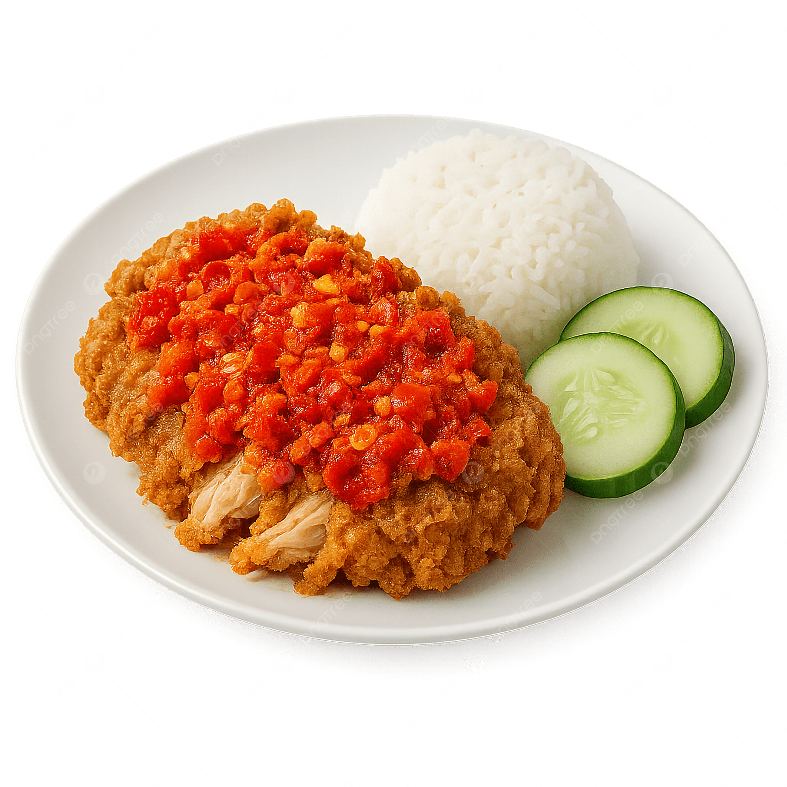
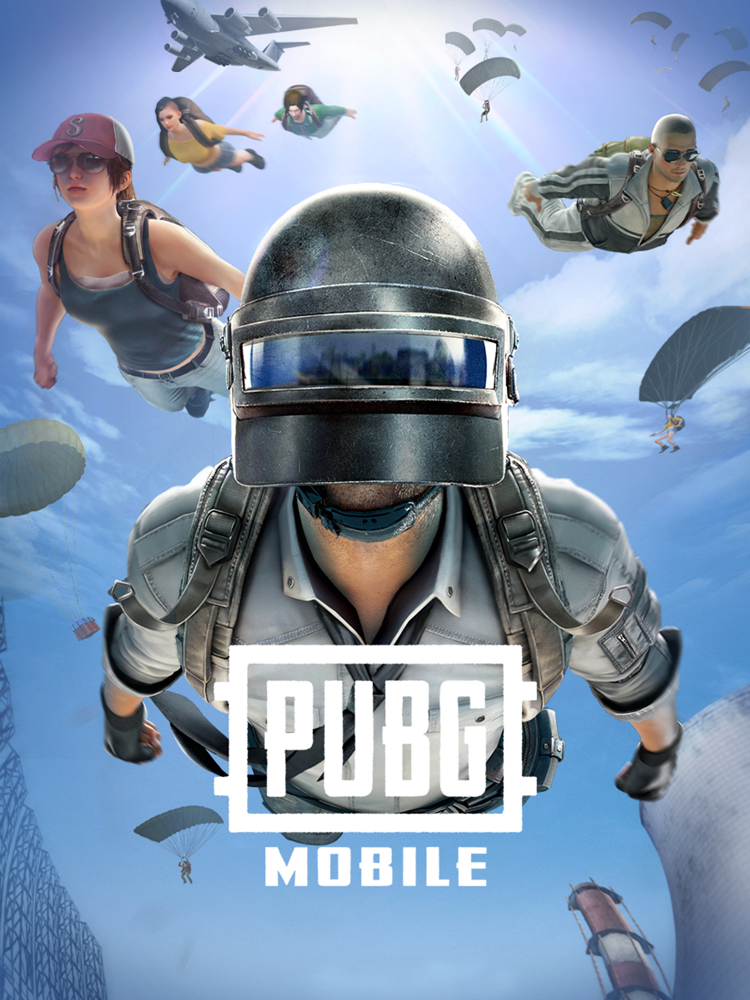

Chapters of Me
Assalamualaikum and hello to everyone visiting my website 💌! My name is Nur Batrisyia Binti Saidi. I was born on 09 November 2005, and I’m 20 years old this year. I live in Cheras, Selangor, and I’m excited to share a little about myself here. I have several nicknames, including Scha, Chacha, Bat, and Yiyin, depending on who’s calling me
💋. Each nickname has its own story and memories, and I feel it reflects different sides of my personality. I love it when people get to know me not just by my name, but also through the experiences and interests I share on this site 💗.
This is my very first time creating a webpage, and honestly, I feel both excited and a little nervous 😣 since I’m still learning and exploring how everything works. It’s definitely a new experience for me — full of challenges, small mistakes, and discoveries along the way. But no matter what happens, I’ll keep going, keep improving, and keep learning from every step. In shaa Allah, I won’t give up easily, because every effort brings me closer to becoming better at what I love 🤞🏻.
Another thing you should know about me is that I’m an ATINY ☠, the fan name for ATEEZ. I love all eight members, but my favorite is their main vocalist, Choi Jongho 🧸. I genuinely enjoy all of their songs because they’re fun to listen to and never feel boring. The song that made me stan them is “Ice On My Teeth,” which stands out with its strong, intense sound and powerful beats that showcase ATEEZ’s confidence and bold performance style.
I don’t really have a favorite song since I enjoy all kinds of music 🎶, but lately I keep replaying “Lampu Biru” by Lucidrari and his collaborators. I'm super into this kind of music. I've added the audio for “Dazed in Time” by Eemrun by below — give it a listen! If you like it, check out “Cemburu” by YonyBoi, and “Pinggan” by Luqman Podolski too 😈 hehee.


My Favorite Foods!
- Mom’s cooking
- Maggi Pedas Gila
- Nasi Ayam Geprek

My Favorite Hobbies!
- Playing games
- Sleeping
- Travelling
Fun Fact!
- I’m only full when my food is spicy.
- I love cats way too much for someone who’s allergic.
- Everything takes me a little longer from makeup and eating to showering and work.